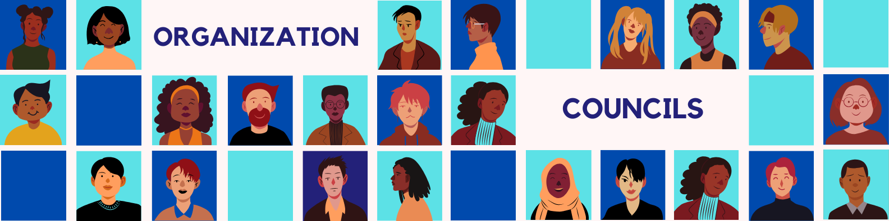
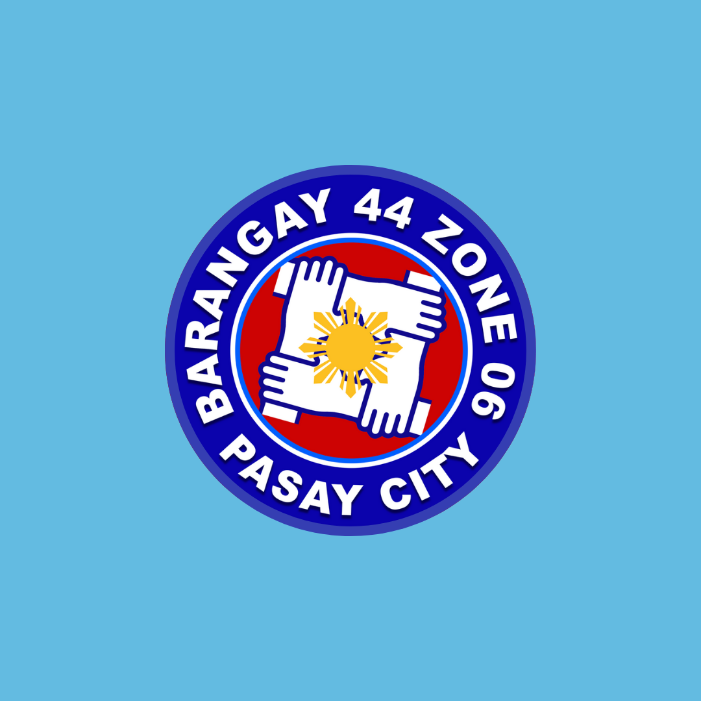

<!DOCTYPE html>
<html></html>
<head>
    <title>RESUME</title>
    <meta charset="UTF-8">
    <link rel="stylesheet" href="https://stackpath.bootstrapcdn.com/bootstrap/4.5.2/css/bootstrap.min.css">
    <link rel="stylesheet" href="style.css"/>
</head>

<!--Body Start-->
<body>
    <div class="container">
        
        <div class="text-container">
    <h1>KEANA ALIZA C. PEREZ </h1> 
    <p><b>Address:</b>1922 Sandejas St.Pasay City|<b>Contact #:</b>+639162105458|<b>Gmail:</b>422003298@ntc.edu.ph|</p>

</div>
</div>
<br>
<!--biograpjy-->
<h2 class="biography">BIOGRAPHY</h2>
<div class="biography_text">
    <p> My name is Keana Aliza C. Perez and I was born on the 28th of October, 2000 in Makati City. 
    I have 1 siblings,we are 2 in total and we are all girls.</p>
    <p>There are a lot of things I like. I like to have fun with my friends, I love cooking, 
    I cook various dish from Filipino dish, Korean dish to Japanese dish I like exploring different 
    flavors that will satisfy my taste buds. I like to read books my favorite book is The Metamorphosis 
    by Franz Kafka and The Little Prince. I also like listening to music, there is no specific genre that I love because my music 
    taste is diverse, from Pop, Rock, Kpop I just love anything that is music to my ears. </p>
    <p>But what I really love is watching movies, I watched movies when I have free time. Some times I can finish three movies in 
        one siting and create a movie review about it.</p>
    <p>I like movies because they transport me to different worlds, evoking emotions and sparking my imagination. 
        They offer a window into diverse cultures, perspectives, and human experiences, broadening my understanding of the world. 
        Whether it's a gripping thriller or a heartwarming romance, movies have a unique power to entertain, inspire, and connect us all.
         My favorite movie is Eternal Sunshine Of The Spotless Mind And After Sun.</p>
    <p>My goals in life are to study hard, acquiring the knowledge and skills necessary to excel in my chosen field.
         With dedication and perseverance, I aspire to secure my dream job, where I can contribute meaningfully to society while finding 
         personal fulfillment and growth. By striving for excellence and staying committed to my ambitions, 
         I aim to make a positive impact on the world around me.</p>
</div>
<br>

<!--Objective-->
<h2>OBJECTIVE</h2>
<div class="objective_text">
    <div class="row">
    <div class="col-12 align-self-center text-center">   
    
    <p> Seeking for a position that will challenge and allow me to use my education
    and skill in a way that is mutually beneficial to both myself and the company.
    And to be able develop my interpersonal skills inside and outside the office
    through hard work and service. </p>
</div>
</div>
</div>
<br>

<!--Personal Data-->
<h2> PERSONAL DATA</h2>
<div class="personal_text">
    <div class="row">
        <div class="col-12 align-self-center text-center">   
    
    <br>
    <br>
    <li><b>Age:</b> 24  </li>
    <li><b>Date Of Birth:</b> October 28, 2000</li>
    <li><b>Gender:</b> Female</li>
    <li><b>Civil Status:</b> Single</li>
    <li><b>Nationality:</b> Filipino</li>
    <li><b>Religion:</b> Catholic </li>
</div>
</div>
</div>
<br>

<!--Educational Background-->
<hr>
<div class="educational">
    <div class="row">
        <div class="col-12 align-self-center text-center">    

<br>
<br>
<li> <b>College:</b> National Teacher College - Bachelor of Science in Information Technology (2022-Present)</li>   
<li> <b>Senior HighSchool:</b> AMA Computer College (2018 - 2020) | <b>Awards:</b> Dean's Lister</li>
<li> <b>Junior High School:</b> St. Scholastica's College Manila (2013-2018) | <b>Awards:</b> 3rd Graduating Honor, Steawardship Award, Leadership Award</li>
<br>
<h5>EXRACURICULARS</h5>
<li>Batch Representative | 2014 -2015</li>
<li>Student Council  Officer | 2014-2015 </li>
<li>School Organization President (Ecological Club) | 2017-2018</li>
</div>
</div>
</div>
<!--Organization and councils-->
<hr>
<div class="org">
    <div class="row">
        <div class="col-12 align-self-center text-center"> 

<br>
<br>
<li> <b>SK KAGAWAD</b> - Barangay 44 Zone 06, Pasay City</li>
<li> <b>BOARD MEMBER</b> - LGAS (Non-profit Charity Organization)</li>  
<br>
</div>
</div>
</div>

<!--work experience-->
<h2>WORK EXPERIENCE</h2>
<div class="socialnet">
    <div class="row">
        <div class="col-12 align-self-center text-center">  
   
    <table class="table">
        <thead>
            <tr>
                <th>Company</th>
                <th>Position</th>
                <th>Job Description</th>
            </tr>
        </thead>
        <tbody>
            <tr>
                <td class="company">POUNDIT BUSINESS (E-COMMERCE) </td>
                <td>INTERN WEB DEVELOPER</td>
                <td class="job_description">
                    <li>Assist the department on debugging the store website</li>
                    <li>Refine existing website though shopify</li>
                    <li>Create product landing page of the store website</li>
                </td>
            </tr>

            <tr>
                <td class="company">MCDONALDS PHILIPPINES </td>
                <td>SERVICE CREW</td>
                <td class="job_description">
                    <li>Provide quality customer service by ensuring customer satisfaction</li>
                    <li>Assisted in the store operation </li>
                    <li>Ensured that proper sanitation and safety procedures are being followed</li>
                </td>
            </tr>

            <tr>
                <td class="company">BARANGAY 44 PASAY CITY </td>
                <td>ASSISTANT SECRETARY</td>
                <td class="job_description">
                    <li>Assist the barangay office daily operation</li>
                    <li>Typed and issued barangay clearance </li>
                    <li>Encode important documents </li>
                </td>
            </tr>
        </tbody>
    </table>
</div>
</div>
</div>
<!--End of work expereince table-->


<!--certifications-->
<hr>
<div class="cert">
    <div class="row">
        <div class="col-12 align-self-center text-center"> 

</div>
</div>
</div>
<br>
<br>
<li><b>Predictive Analytics for Digital Marketers: Harnessing AI for Insights</b> | Xaltius Pte Ltd | FEBRUARY 2024 </li>
<li><b>Introduction to Cybersecurity</b> | CISCO  NETWORKING ACADEMY | DECEMBER 2023</li>
<li><b> Microsoft Digital Literacy</b> | Technical Education And Skills Development Authority 
    Of The Philippines | SEPTEMBER 2023</li>
<li><b>Information Literacy</b> | LINKED IN LEARNING | MARCH 2023</li>
<li><b>Foundations: Data, Data, Everywhere</b> | COURSERA AND GOOGLE CAREERS | NOVEMBER 2022</li>
<li><b>Phyton boothcamp: Deeplearning Into Phyton Coding </b> | UDEMY | MARCH 2021</li>
<br>


<!--Personal Data-->
<h2> SOCIAL NETWORKING PROFILE</h2>
<div class="socialnet">
    <div class="row">
        <div class="col-12 align-self-center text-center">  

<li><b>FACEBOOK</b> |  https://www.facebook.com/kacPrz </li>

<li><b>GITHUB</b> | https://github.com/kacprz</li>

<li><b>LINKEDIN</b> | https://www.linkedin.com/in/kacstrvdprz/</li>
</div>
</div>
</div>

</body>
</html>